Mikroprojekte - Themenvergabe
| lfd.Nr. | Name | Thema | Feedback |
|---|---|---|---|
1 |
Daniel |
Tageszeitung |
|
2 |
Karawane |
Produktionsbetrieb (Fließband) |
|
3 |
Benjamin Musikfreund 1 |
Centermanager |
|
4 |
Paul |
Baustellenkoordinator |
|
5 |
Jonas die Birke |
Baumschule |
|
6 |
Nico |
Kochrezepte |
|
7 |
Benjamin Eggman |
Farmverwaltung |
|
8 |
Moritz Brille |
Optiker |
|
9 |
Lorenzius |
Facility Management |
|
10 |
Lukas Hörnchen |
Zooverwaltung |
|
11 |
Nathalie |
Event-Manager |
|
12 |
Tarik Tarik |
Reisebüro |
|
13 |
David Musikfreund 2 |
Plattenlabel |
|
14 |
Jan Händler |
Parkplatzverwaltung |
|
15 |
Vinzent K |
Skischule |
|
16 |
Muhammet |
Fitnessstudio |
|
17 |
Marcel die Ecke |
Fakturierung |
|
18 |
Moritz ohne Brille |
Kfz-Händler |
|
19 |
Jimmy |
Friseurladen |
|
20 |
Roberto |
Restaurant |
|
21 |
Felix der Große |
Juwelier |
|
22 |
Eminem |
Busreisen (inkl Schulbusse) |
|
23 |
Bocki Musikfreund 3 |
Autovermietung |
|
24 |
Patrick |
Tanzschule |
|
25 |
Fabian Woody |
Bücherei |
|
26 |
Philip Cokeman |
Friedhofsverwaltung |
|
27 |
Marc Krimiman |
Callcenter |
4. 2020-10-05
-
POST-Request
-
@Consumes (Input-Parameter)
4.1. Assignment 1: CRUD-REST-Endpoint for One Entity
Create a simple application for your micro-project-topic in Quarkus:
-
lastname-projectname zB mustermann-restaurant In the package
at.htl.<projectname>.entityzB.at.htl.restaurant.entitycreate a new entity-class ie Product (in this restaurant are the products dishes and beverages) -
Store the data in a collection in a appropriate repository (you use NO database)
-
in the package
at.htl.<projectname>.boundary(ieat.htl.restaurant.boundary) create a class<Entity>Service.javaieProductService.java -
In this class create some endpoints to provide CRUD-functionality.
-
Use
-
JsonObject
-
JsonArray
-
Response
-
marshalling of an object
-
-
-
In a file
request.httpcreate the appropriate requests, for consuming your endpoints. -
The endpoints are supposed to work with data in JSON- or XML-format
-
Use Swagger for documenting your endpoints.
-
Create an essential description of your project in the
README.md -
Don’t forget to exclude the files, which are not supposed to be stored in the github-repo.
-
Create an commit for each endpoint with appropriate messages for each commit.
-
Deadline: 12.October 2020, 23:59
-
You can find the Classroom Link at Discord.
| Use a master data table (Stammdatentabelle) |
____ ____.__ .__ ___________ _____ .__
\ \ / /|__| ____ | | \_ _____/_______/ ____\____ | | ____
\ Y / | |/ __ \| | | __)_\_ __ \ __\/ _ \| | / ___\
\ / | \ ___/| |__ | \| | \/| | ( <_> ) |__/ /_/ >
\___/ |__|\___ >____/ /_______ /|__| |__| \____/|____/\___ /
\/ \/ /_____/

5. 2020-10-08
5.1. CRUD - Methoden
| http-method | Anwendung |
|---|---|
POST |
Erstellen einer neuen Resource (Datensatz) |
PUT |
Ändern einer existierenden Resource |
PATCH |
Ändern einer existierenden Resource, jedoch nur einen Teil (zB. ein Feld) |
GET |
Lesen einer Resource |
DELETE |
Löschen einer Resource |
5.2. Testing a REST-Endpoint
<dependency>
<groupId>org.assertj</groupId>
<artifactId>assertj-core</artifactId>
<version>3.17.2</version>
<scope>test</scope>
</dependency>package at.htl;
import io.quarkus.test.junit.QuarkusTest;
import org.junit.jupiter.api.Test;
import static io.restassured.RestAssured.given;
import static org.assertj.core.api.Assertions.assertThat; (1)
@QuarkusTest (2)
public class ExampleResourceTest {
@Test
public void testHelloEndpoint() {
String actual = given()
.when()
.get("/api")
.then()
.statusCode(200)
.extract()
.body()
.asString();
System.out.println(actual);
assertThat(actual)
.startsWith("hello 3ahif! ->");
}
}| 1 | der statische Import ist kritisch |
| 2 | startet die Applikation auf einem eigenen Port |
6. Bewertung Assignment 1
siehe Moodle
7. 2020-10-19
-
CDI
-
DI … Dependency Injection
-
C … Context
-
RequestScoped
-
SessionScoped
-
ApplicationScoped
-
-
8. 2020-10-22
-
CDI
-
Resilienz → Fähigkeit technischer Systeme, bei einem Teilausfall nicht vollständig zu versagen
9. 2020-11-09 - CDI
-
Scope … (Gültigkeits-)Bereich
-
zB Gültigkeitsbereich bei Variablen (i.N. ein Block)
-
zB Lebensdauer von Objekten (ApplicationScoped, SessionScoped, RequestScoped)
-
…
-
-
CDI
-
C … Context … Lebensdauer der Objekte
-
DI … Dependency Injection … Injizieren einer Abhängigkeit
-
-
Was bringt CDI?
-
Inversion of Control / IoC: Das Programm muss sich nicht mehr um die Erstellung von Objekten kümmern, das übernimmt der Container
-
Dies führt zu wenig fehleranfälligen Programmen
-
Um Erstellen/Zuweisen/Löschen der Objekte kümmert sich der Container
-
Man kann einfach die Konfiguration ändern
-
Testcontainer mit Testobjekten
-
Produktiv-Container mit Real-Life-Objekten
-
-
-
-
-
Eine Dependency oder Abhängigkeit beschreibt in der Softwareentwicklung, dass ein Programm ein bestimmtes Stück Code (z. B. Frameworks, Bibliotheken, Klasse) benötigt, um ordnungsgemäß zu funktionieren.
-
-
Wie kann ein Objekt erstellt werden?
-
Durch Verwendung des Schlüsselwortes
new -
Durch Verwendung von Design Patterns (Entwurfsmuster)
-
zB einer Factory (Design Pattern)
-
zB eines Builder Pattern (Erbauer)
-
-
Durch Dependency Injection
-
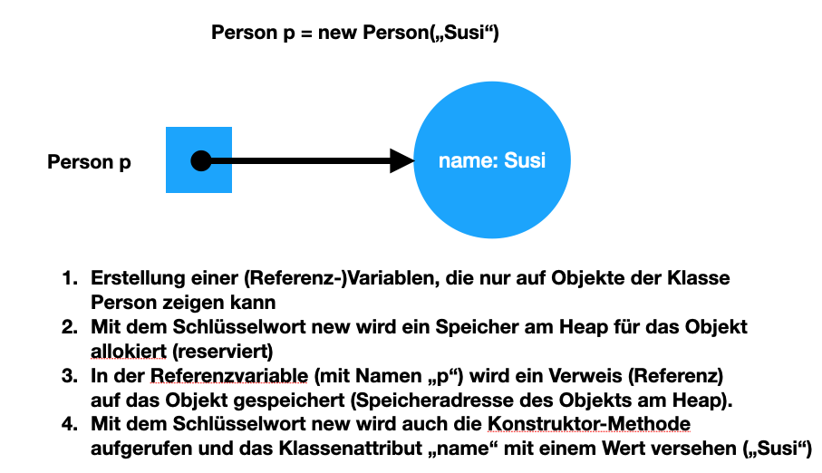
-
Erstellt man ein Objekt mit "new", so ist man selbst für die Lebensdauer verantwortlich
-
Man kann das obige Person-Objekt löschen, indem man die Referenz auf das Objekt auf null setzt
-
Der Garbage Collector gibt den Speicherpaltz des Objekts frei, da keine Referenz mehr auf das Objekt verweist.
-
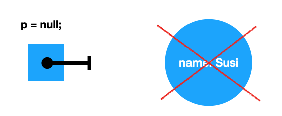
-
Bei CDI ist der sogenannte DI-Container verantwortlich für
-
das Erstellen von Objekten
-
das Zuweisen zu einem Context (Lebensdauer)
-
das Zuweisen von Objekten zu Variablen
-
das Löschen von Objekten (Freigeben des Speicherplatzes)
-
man spricht von "container-managed" Objekten oder auch Java-Beans
-
Durch Verwendung von Annotationen (@ApplicationScoped, @SessionScoped, @RequestScoped) kann man die Lebensdauer beeinflussen.
-
Mit @Inject kann der Developer eine Instanz einer Klasse anfordern.
-
-
The container is the environment where your application runs.
-
Was ist ein Servlet
-
Ein Servlet ist DIE Methode, um Java-Code aus dem Internet (mittels TCP/IP)) aufrufen zu können
-
Viele Bibliotheken zB JAX-RS, JSF usw verwenden im Hintergrund Servlets.
-
9.1. Logging in Jakarta EE (Quarkus)
-
Es wird empfohlen den jboss-Logger zu verwenden.
@ApplicationScoped
public class GreetingService {
private static final Logger logger = Logger
.getLogger(GreetingService.class.getSimpleName()); (1)
int counter;
public String greeting(String name) {
logger.info(String.format("Hello %s (%d x verwendet)", name, ++counter)); (2)
return String.format("Hello %s (%d x verwendet)", name, ++counter);
}
}| 1 | Man muss einen Logger deklarieren. Der Klassenname wird übergeben. |
| 2 | Man kann den Logger verwenden |
2020-11-06 09:40:53,795 INFO [at.htl.con.GreetingService] (executor-thread-198) Hello susi (1 x verwendet!)
-
Es gibt Log-Levels
-
INFO
-
ERROR
-
FATAL
-
DEBUG
-
…
-
-
Es gibt sogenannte Appender zur Ausgabe auf verschiedenen Medien
-
Konsole
-
in Text-Files (auch rotierend)
-
zB 3 Files mit einer bestimmten Größe (zB 10k).
-
Sind alle 3 Files beschrieben, wird das erste File gelöscht und neu beschrieben
-
Vorteile:
-
Der Speicher (Festplatte) wird nicht vollgeschrieben
-
Es stehen immer Log-Meldungen aus der Vergangenheit zur Verfügung
-
-
-
in Datenbanken
-
auf einen REST-Endpoint
-
…
-
9.1.1. Logging mit Dependency Injection
Man kann auch einen Logger mit DI injizieren
public class LoggerProducer {
@Produces
public Logger produceLogger(InjectionPoint injectionPoint) {
return Logger.getLogger(injectionPoint.getBean().getBeanClass());
}
}@ApplicationScoped
public class GreetingService {
@Inject
private Logger logger; (1)
int counter;
public String greeting(String name) {
logger.info(String.format("Hello %s (%d x verwendet!)", name, ++counter)); (2)
return String.format("Hello %s (%d x verwendet!)", name, ++counter);
}
}| 1 | Die Logger Klasse wird injiziert. |
| 2 | Die Verwendung bleibt gleich |
10. 2020-11-12
10.1. Automatic Startup
import javax.enterprise.context.ApplicationScoped;
import javax.enterprise.event.Observes;
import javax.inject.Inject;
@ApplicationScoped
public class InitBean {
@Inject
Logger LOGGER;
void onStart(@Observes StartupEvent ev) { (1)
LOGGER.error("The application is starting...");
}
}| 1 | add an Observer for lifecycle method |
11. CDI and the Constructor
-
Warum funktioniert der Zugriff auf injizierte Ressourcen aus dem Konstruktor nicht?
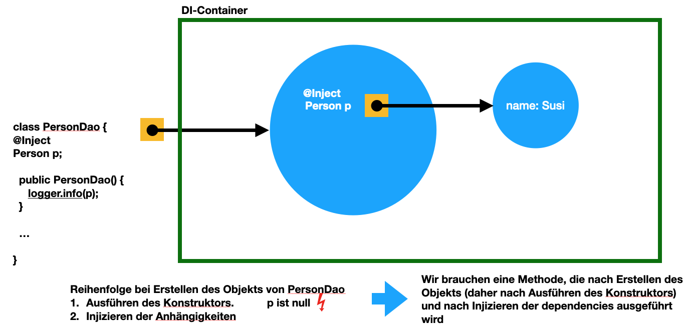
@ApplicationScoped
public class InitBean {
Logger LOGGER;
@Inject
GreetingService greetingService;
public InitBean() {
}
@PostConstruct (1)
private void init() {
LOGGER.info(greetingService.greeting("Susi"));
}
void onStart(@Observes StartupEvent ev) { (2)
LOGGER.error("The application is starting...");
}
}| 1 | wird nach dem Konstruktor, nachdem das Objekt fertig erstellt wurde, ausgeführt. |
| 2 | es gibt neben dem StartupEvent aupch ein ShutdownEvent |
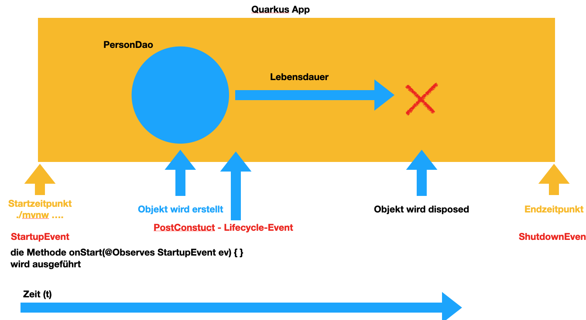
12. 2020-11-16
12.1. Convention-over-Configuration
-
"Vereinbarung vor Konfiguration"
-
Man muss nicht das System extra konfigurieren
-
Es gibt eine vereinbarte Standardkonfiguration
-
Diese kann bei Bedarf geändert werden
12.2. Strategien für Primärschlüsselerstellung
-
IDENTITY
-
Autowert, AutoIncrement → in einem Tabellenfeld wird automatisch ein Zähler hochgezählt
-
-
SEQUENCE
-
Die Sequence ist ein eigenständiges Datenbankobjekt, die eine Folge von Zahlen generiert
-
in Reihenfolge, zufällig, rollieren usw.
-
kann man mit der Annotation @SequenceGenerator im Code erstellem
-
-
TABLE
-
die einfachste Variante
-
eine Tabelle (meist mit Namen SEQUENCE) hat ein Feld mit einer Zahl, die mit UPDATEs hochgezählt wird
-
Manchmal hat man für jede Tabellen-Id eine eigene Zeile
-
-
AUTO
-
eine der obigen Strategien wird automatisch gewählt (meist TABLE)
-
12.3. Transaktion
-
Transaktion … kleinste unteilbare Einheit
-
zB Überweisung in einer Bank
-
- von Konto A wird abgebucht
-
- auf Konto B wird aufgebucht
-
-
Logical Unit of Work (LUW)
-
Annotation @Transactional
@Inject
EntityManager em;
@Inject
UserTransaction tm;
...
@Test
void createPerson() throws SystemException, NotSupportedException, HeuristicRollbackException, HeuristicMixedException, RollbackException {
Person susi = new Person("susi");
tm.begin();
em.persist(susi);
tm.commit();
Table personTable = new Table(getDataSource(), "person");
output(personTable).toConsole();
assertThat(personTable).hasNumberOfRows(1);
}15. 2020-11-26
15.1. Persistence Context
Person susi = new Person("susi");
em.persist(susi);
susi.setName("Suzie Quattro");[person table] |-----------|---------|-----------|---------------| | | | * | | | | PRIMARY | ID | NAME | | | KEY | (NUMBER) | (TEXT) | | | | Index : 0 | Index : 1 | |-----------|---------|-----------|---------------| | Index : 0 | 1 | 1 | Suzie Quattro | |-----------|---------|-----------|---------------|
-
Begriffspaar:
-
transient … flüchtig
-
persistent … dauerhaft speichern
-
15.2. Arten von Beziehungen zwischen Objekten
15.2.1. Vererbung
Pkw kaefer = new Pkw();-
3 Strategien
-
SINGLE_TABLE
-
TABLE_CLASS (table per concrete class)
-
joined
-
15.2.2. Aggregation
-
besteht-aus, consists-of
-
Objekte können zerstörungsfrei getrennt werden
-
Bsp: Auto und Autoreifen
Assignment 02 Grading
Thomas Stütz 1.1.0, 2020-09-21: crud endpoint for a single entity :sourcedir: ../src/main/java :icons: font :sectnums: // Nummerierung der Überschriften / section numbering
Download am 2020-11-28 19:22 and subsequent
| lfd.Nr. | Name | Kommentar | Note | ||||
|---|---|---|---|---|---|---|---|
1 |
01AD |
1. Allgemeines
Dein Quarkus-Projekt befindet sich in einem Sub-Dir des git repos. 2. DatenmodellBin mir ziemlich sicher, dass das kein Class Diagram ist
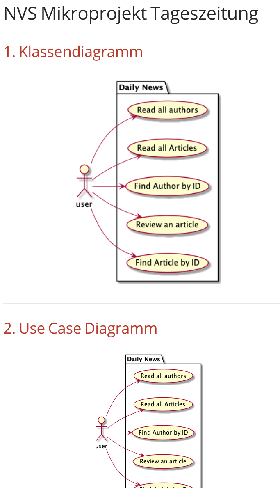 Wer suchet, der findet
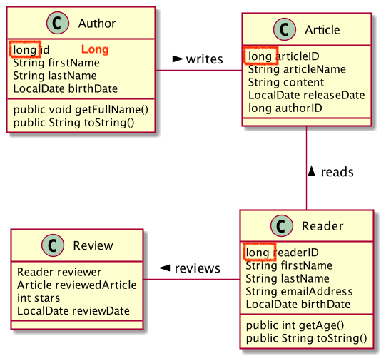
3. DokumentationDie Beschreibung im README.md ist mangelhaft
Tageszeitung ist ein Rest-Service, welcher alle Authoren und Artikeln ordnet/speichert. Das Projekt enthält 4 Klassen (Author, Article, Reader und Review). Durch die Service-Klasse die für alle Requests zuständig ist, können wir vom Author, Article und Reader jeweils eine Instanz erstellen und hinzufügen, löschen, updaten und lesen. 4. Projektstruktur (Maven)
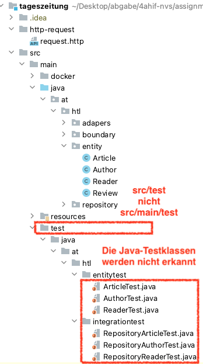 5. Automatisierte Tests
suboptimal
besser
So sollte ein Test nicht gestaltet sein, …
...da man in der Fehlermeldung nicht erkennen kann, was nun falsch ist
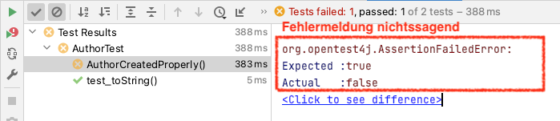 besser
i.S.v. aussagekräftiger:
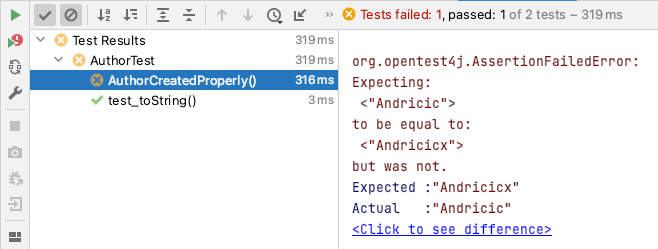 6. Importskeine exotischen Libraries verwenden, zB hier bei Swagger
korrekter Import (Extension Guide beachten)
Berücksichtigung von null zB bei marshal(…)
7. Korrigiertes CLD
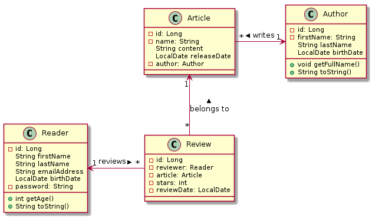
|
bef(3) |
||||
2 |
02BK aka M |
1. Datenmodell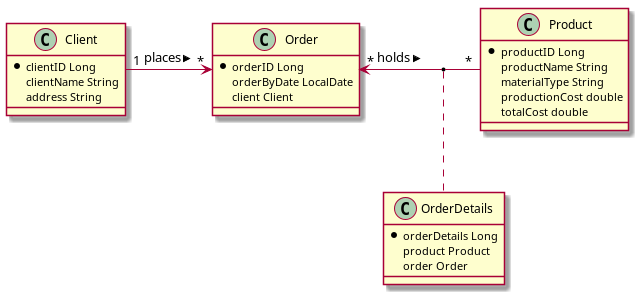
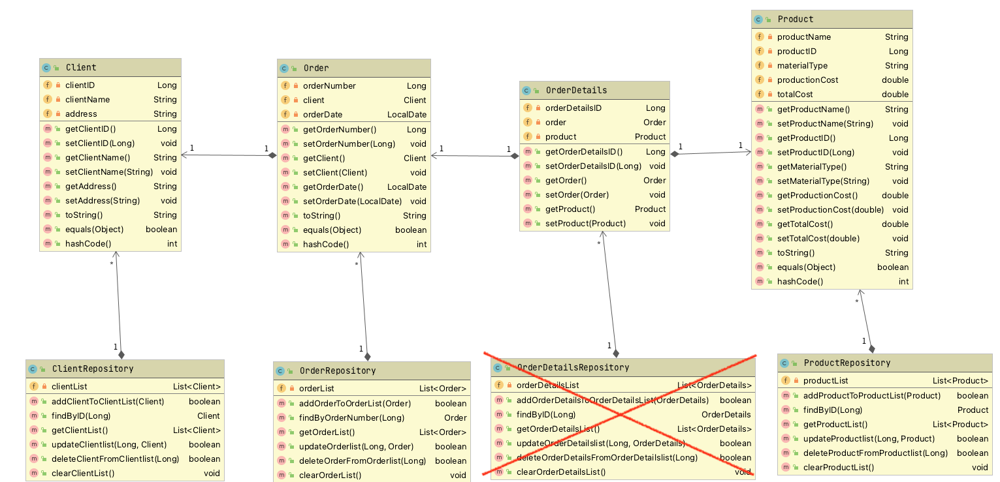
2. Use-Case-Diagram
4. Automatisierte Tests
|
bef(3) |
||||
3 |
03BB |
1. Datenmodell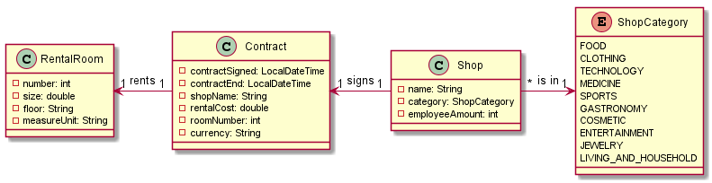
2. Use-Case-Diagram
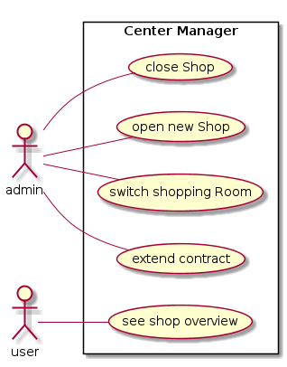
3. Automatisierte Tests
4. ImportsWie viele JAckson-Implementierungen brauchst du eigentlich?
|
bef(3) |
||||
4 |
04BP |
n/a |
ngd(5) |
||||
5 |
05BJ |
gen(4) |
|||||
6 |
06BN |
1. Datenmodell Kochrezepte
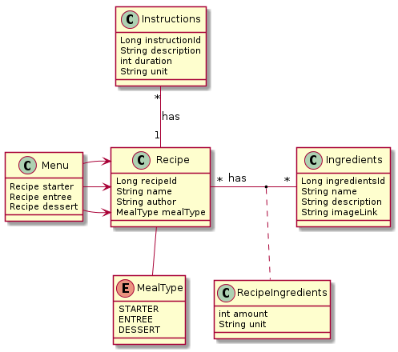
3. Dokumentation
|
gut(2) |
||||
7 |
07EB |
ngd(5) |
|||||
8 |
08EM |
1. Datenmodell
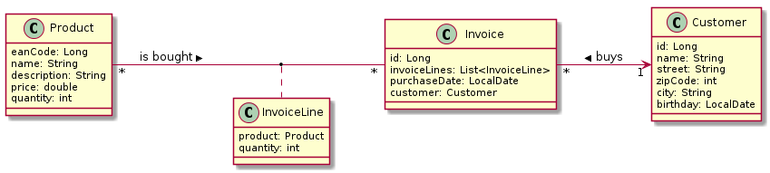
|
gut(2) |
||||
9 |
09GL |
leeres Repo |
ngd(5) |
||||
10 |
10HL |
ngd(5) |
|||||
11 |
11HN |
ngd(5) |
|||||
12 |
12HT |
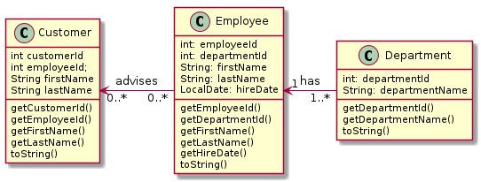
|
ngd(5) |
||||
13 |
13ID |
1. Datenmodell Music-Label
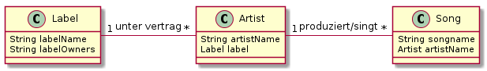
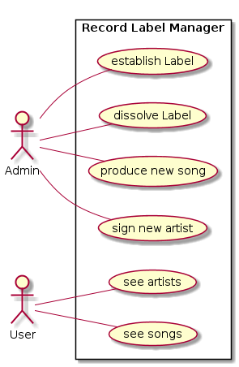
|
gen(4) |
||||
14 |
14KJ |
1. Datenmodell
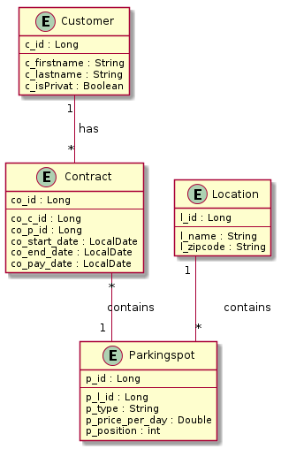
|
bef(3) |
||||
15 |
15KV |
gut(2) |
|||||
16 |
16ÖMB |
1. Datenmodell
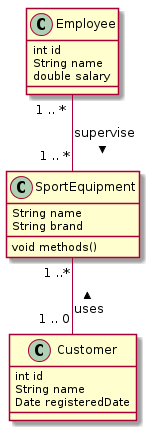
|
gen-(4-) |
||||
17 |
17PMa |
1. DatenmodellDas reicht wohl nicht - ein eigenes CLD war verlangt
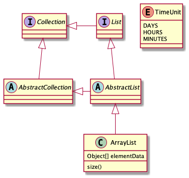
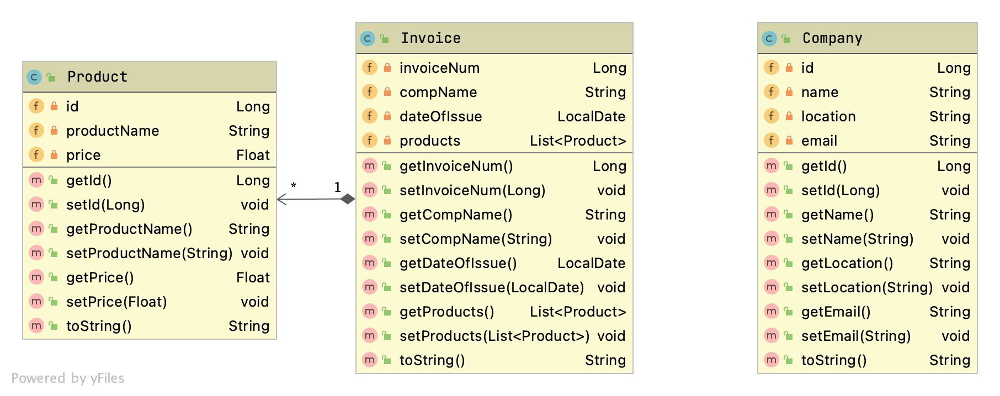
Figure 1. Das tatsächliche CLD
|
ngd(5) |
||||
18 |
18PMo |
gen(4) |
|||||
19 |
19RY |
leeres Projekt abgegeben |
ngd(5) |
||||
20 |
20RR |
Man kann das Projekttitel auch ändern
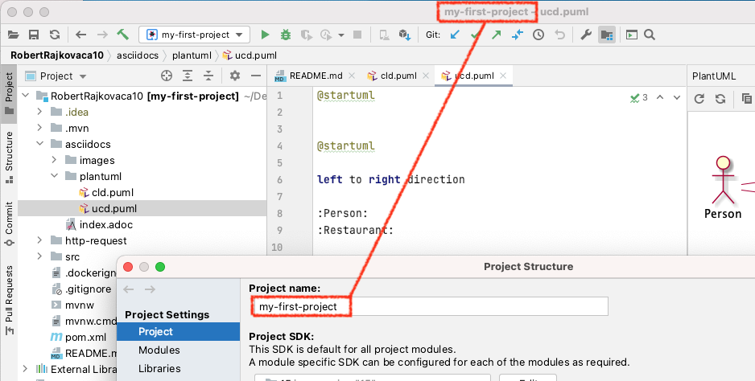 1. Datenmodell
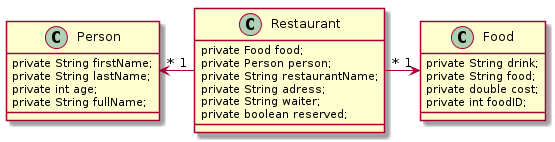
|
ngd(5) |
||||
21 |
21RF |
ngd(5) |
|||||
22 |
22SE |
1. Datenmodell
3. Automatisierte Tests
|
gut(2) |
||||
23 |
23SB |
1. DatenmodellFigure 3. Notation falsch (das ist ja kein Programmcode, sondern ein CLD)
Figure 4. teilweise korrigiert
|
gen(4) |
||||
24 |
24SP |
ngd(5) |
|||||
25 |
25TF |
1. Datenmodell
1.1. korrigiert
|
ngd(5) |
||||
26 |
26TP |
n/a 1. Datenmodell
|
ngd(5) |
||||
27 |
27WM |
1. Datenmodell
|
ngd(5) |


{kind=link}
-
Grundlegende Informationen sind in der README.md anzuführen
-
Thema des Projekts
-
Umfang des Projekts
-
Sind Tests enthalten?
-
-
Wie startet man das Projekt
-
-
Das Projekt muss lauffähig sein (am Besten in ein neues Verzeichnis clonen und ausprobieren)
-
Testdaten sind sehr hilfreich
-
CRUD muss vorhanden sein
-
Was muss ich testen?
-
Meine Use-Cases / User-Stories (bei den System-Tests → REST-Endpoints)
-
Meine Abhängigkeiten (bei den Repository-Tests)
-
-
Was ist nicht so wichtig zu testen?
-
Die Getter und Setter, die eh keine Logik beinhalten.
-
-
Was ist bei Datenmodellen zu beachten
-
Zuerst soll man sich eine (realistisches) Problem überlegen
-
Dann formuliert man die Use-Cases
-
Die UCs sollen nicht technisch sein, sondern aus der Sicht des Benutzers und nicht des Progrmmierers
-
Wie kann das zu erstellende System dem Benutzer bei seiner (täglichen) Arbeit helfen
-
-
Wenn man aufgrund der UCs weiß, was das Datenmodell können soll, kann man dieses modellieren
-
Ein Klassendiagramm benötigt eigentlich keine Surrogate (künstliche Id), die kommen ert beim relationalen Modell dazu
-
-
-
SQL
-
gibt in der SELECT - Klausel die gewünschten Spalten an
-
SELECT ename, deptno FROM emp;
-
NativeQuery, NamedNativeQuery
-
-
JP-QL
-
da objektorientiert, werden ganze Objekt zurückgegeben
-
SELECT e from Employee e
-
SELECT e.ename, e.deptno FROM Employee e
-
Query, TypedQuery, NamedQuery
-
-
Problem:
-
Bei aggregierten Daten ist die Rückgabe von Objekten kaum möglich.
-
SELECT COUNT(*) FROM emp GROUP BY deptno;
-
-
Schlüssel (Primary Key)
-
Natürlichen Schlüssel
-
Künstlichen Schlüssel (Surrogat)
-
1. 2020-12-10
1.2. Assignment 04 - JPA mit Panache
-
https://htl-leonding-college.github.io/quarkus-lecture-notes/assignment04-jpa-panache.html
-
Invitation to the classroom repo for assignment 04: https://classroom.github.com/a/HOTLJ1ue
4. 2021-01-07 - Bidirektionale Beziehungen
Begriffe: Multiplizität, Kardinalität, referentielle Integrität, cascading (PERSIST,MERGE,REMOVE,… )
Übung Hobby (live-coding)
4.1. Persistieren von Klassen in die DB
-
in pom.xml die Abhängigkeiten (Libraries) eintragen
-
JPA
-
JDBC-Driver
-
-
Vorbereiten der Klassen
-
@Entity
-
@Id @GeneratedValue
-
Annotationen für Assoziationen eintragen
-
-
Datenbank-JDBC-Url in application.properties eintragen
-
Repositories erstellen
Übung: * Persistieren Sie die Tabellen PErson und Hobby in der Datenbank Hobby: PK String abbr Person: PK Long id * Erstellen Sie Tests mit assertJ-DB, um die Korrektheit der Klassen sicherzustellen ** @QuarkusTest nicht vergessen * Tipp: https://vladmihalcea.com/the-best-way-to-map-a-onetomany-association-with-jpa-and-hibernate/
5. 2021-01-11
5.1. Allgemeine Fehlerbehebungs- bzw Fehlervermeidungsmaßnahmen
5.1.1. Feedback beachten
-
werden Kommentare zu erstellten Arbeiten zur Verfügung gestellt, so ist es wichtig, nicht nur seine eigenen Fehler anzusehen, sondern auch die der anderen
-
sehr oft wiederholen sich Fehler und Versäumnisse in vielen Arbeiten
5.1.2. Angabe lesen
-
Die Angabe hat mehrere Komponenten
-
Angabe.pdf (der traditionelle Angabezettel)
-
Kommentare über Klassen und Methoden
-
Falls man diese nicht versteht, darf und sollte gefragt werden
-
-
die automatisierten Tests
-
hier kann man ersehen, wie die Methoden benutzt werden und was abgeprüft wird (assert)
-
-
5.1.3. Das Datenmodell ist als Erstes zu generieren
-
Zuerst soll die Erstellung des Datenmodells funktionieren
-
Entity-Tests durchführen, damit die Entities soweit funktionieren
-
Entities persistenzfähig machen
-
Repositories persistenzfähig machen → @ApplicationScoped ist bei allen Repos einzutragen
-
5.1.4. Definierten Ausgangszustand herstellen
wird auch AEG genannt: Ausgeschaltet-Eingeschaltet-Geht
-
darunter fällt das manuelle Löschen der Tabellen (solange dieses nicht nicht korrekt ist)
-
das Löschen des target Ordners bei "komischen" Fehlermeldungen zB
java: cannot find symbol-
wird der target Ordner nicht gelöscht, können Codedteien vom letzten Kompiliervorgang bestehen bleiben und die Funktionsfähigkeit beeinträchtigen
-
Dies ist besonders bei Tests wichtig, da beim normalen Start mit
mvnwmeistcleanverwendet wird, wodurch der trget-Ordner gelöscht wird-
man könnte beim Aufruf der Tests ebenfalls ein CLEAN eintragen - somit würde der target-Ordner automatisch gelöscht
-
-
5.1.5. DROP TABLE manually
-
Solange das Datenmodell noch nicht korrekt ist, ist es angeraten, die Tabellen per DROP manuell zu löschen
-
dh insbesondere Tabellenbezeichnungen sind noch nicht korrekt
-
oder zusätzliche Tabellen wurde automatisch erstellt (zB assoziative Tabellen, weil
mappedByfehlt)
-
-
Grund hierfür ist die referentielle Integrität. Diese kann verhindern, dass eine Tabelle mit DROP TABLE (automtisch) gelöscht wird, weil eine referntielle Beziehung zwischen diesen Tabellen besteht
5.1.7. Die Unterstützung der IDE verwenden
-
Debugger verwenden
-
Basic Code Completion (AutoComplete) verwenden (Strg + Leertaste)
-
Smart Code Completion verwenden (Ctrl + Shft + Leertaste)
-
Refactoring (Strg + T) zB beim Umbenennen von Variablen/Methoden
-
…
-
Keymap Referenz unter Hilfe ansehen
5.1.8. (Zwischen-)Ergebnisse kontrollieren
-
Es ist wichtig die Ergebnisse der Methoden und Codefragmente zu kontrollieren.
-
Die Annahme, dass der Code schon funktionieren wird, ist nicht zulässig. Das ist wie programmieren mit Augenbinde.
-
Entweder
-
wird der Debugger verwendet (die vorzuziehende Vorgehensweise)
-
oder mit logging- oder println-Ausgaben wird das Ergebnis kontrolliert (eher nur in Ausnahmefällen verwenden)
-
-
Dies ist der Grund, warum wir eine professionelle IDE verwenden und nicht irgendeinen Code-Editor
5.1.9. Verbesserung sauber ausarbeiten
-
Eine Verbesserung der Arbeit ist hauptsächlich dazu da, die eigenen Fehler zu reflektieren
-
Ihr macht Sie nicht für den Lehrer
-
Im besten Fall dient Eure Verbesserung (Beschreibung der Fehler und die Maßnahmen zur Korrektur) beim nächsten Test als Grundlage
-
Die Erstellung eines pdf-Dokuments soll es Euch ermöglichen auch vor dem nächsten Test noch mal Eure Fehler durchzugehen und nicht in x Codestellen in vielleicht mehreren Projekten zusammenzusuchen
-
| Nach einer Arbeit ist grundsätzlich von jedem eine Verbesserung durchzuführen, nicht nur von Personen mit negativer Note!!! |
11. 2021-03-15
-
Vereinbarung: Für das nächste Mal wird probeweise eine RecyclerView im Rahmen des Microprojekts erstellt
-
mit mehreren Feldern
-
-
Falls es eine LZK gibt, dann keine RecyclerView
12. 2021-03-18
-
Übung
-
Classroom: https://classroom.github.com/a/IKBe6iXb
-
Ausgangspunkt ist das Mikroprojekt
-
Es ist eine Liste mit RecyclerView in Android zu erstellen
-
Die Commits-Messages müssen mit dem Nachnamen beginnen.
-
Diese Übung ist Grundlage für LZK-Gespräche
-
Im README.md ist kurz das Projektthema und die Implementierung zu beschreiben
-
In der ORacle VM ist ein Quarkus-Restful-Service zu erstellen (mit automatisierter Pipeline)
-
passend zum Microprojekt
-
verwenden Sie hierzu Ihr quarkus-microproject
-
-
19. 2021-05-20
19.1. Internationalization (I18N)
-
Internationalisierung bedeutet, ein Programm so zu gestalten, dass es leicht (ohne den Quellcode ändern zu müssen) an andere Sprachen angepasst werden kann.
-
Grundprinzip von I18N
-
Es gibt key-value Paare. Der key wird in das Programm eingetragen. Im Value steht der Ausdruck in der jeweiligen Sprache.
-
Um mehrere Sprachen verwenden zu können werden entweder
-
die Ressourcen - Dateien mit Spachenkennzeichen versehen
-
oder die Verzeichnisse, die diese Dateien beinhalten
-
-
20. Konkretisierung der Angabe für das Mikroprojekt
-
Das Microprojekt besteht aus zwei Teilen:
-
Backend (Quarkus / JakartaEE)
-
Frontend (Android)
-
Erstellen sie im Repo ein Quarkus Projekt mit Namen
backend -
Später erstellen Sie ein Android-Projekt mit Namen
mobile
-
-
Zuerst ist das Backend sauber zu erstellen (Ordner
backendim Repository)-
Die Tabellen und deren Assoziationen müssen korrekt sein und mind. der 3.NF entsprechen
-
Es sind Endpoints zu erstellen:
-
Bei den Endpoints dürfen nicht nur die Daten jeweils einer Entität (Tabelle) zurückgegeben werden, sondern es ist mindestens eine Query zu erstellen, die aus mehreren Tabellen Daten zurück gibt.
-
Auch sind die Werte zu filtern:
-
zumindest einmal mit QueryParams
-
zumindest einmal mit PathParams
-
-
Mindestens ein Endpoint muss
-
einen GET-Request
-
einen POST-Request
-
einmal mit nur einem Objekt und
-
einmal mit mehreren Objekten
-
-
einen PUT-Request
-
einen PATCH-Request
-
und einen DELETE-Request beinhalten
-
-
-
Es ist zumindest ein request.http - File im http-requests - Ordner zu erstellen, damit die Abfrage der Endpoints dokumentiert ist
-
In der README.md ist eine sehr rudimentäre Dokumentation enthalten:
-
Datenmodell
-
Use-Case mit UCD: Es sind spezielle Use-Cases für das jeweilige Thema zu implementieren
-
zB für ein Kino die Sitzreservierung bei Filmen
-
es darf nicht für jede Themenstellung eine User-, Kunden- oder sonstige Verwaltung durchgeführt werden, die bei sämtlichen Themenstellungen ident ist.
-
-
Infos über die Endpoints - dies kann und soll durch einen Swagger ersetzt werden → Link auf Swagger angeben
-
Die Default-Swagger-Infos können und sollen durch Annotationen ergänzt werden.
-
Die Angabe soll als Checkliste angegeben sein, damit auf einen Blick ersichtlich ist, was gemacht wurde.
-
Wie startet man das Projekt.
-
-
| Es geht grundsätzlich nicht darum, dass alle Endpoints (dh für alle Entitäten) vollständig ausprogrmmiert werden. Allerdings sind die verschiedenen Konzepte (Queries, Params, Request-Arten, POSTs mit einem und mehreren Objekten als csv oder json) einmal zu implementieren. |
-
Das Frontend wird später erstellt (Termin wird nooch vereinbart)
-
Abgabetermin: 26. Mai 2021, 8:00
-
Als Repo wird 14-microproject verwendet
22. 2021-06-10 (Do.)
22.3. MicroProfile (Wdhlg vom Anfang des Jahres)
MicroProfile ist eine Auswahl von Jakarta EE Spezifikationen (DI, JPA, JAX-RS, …), ergänzt um weitere Specs (Health, Fault Tolerance, Metrics, …).
-
Dabei wird kein separater Application Server verwendet.
-
MicroProfile ist für cloud computing optimiert